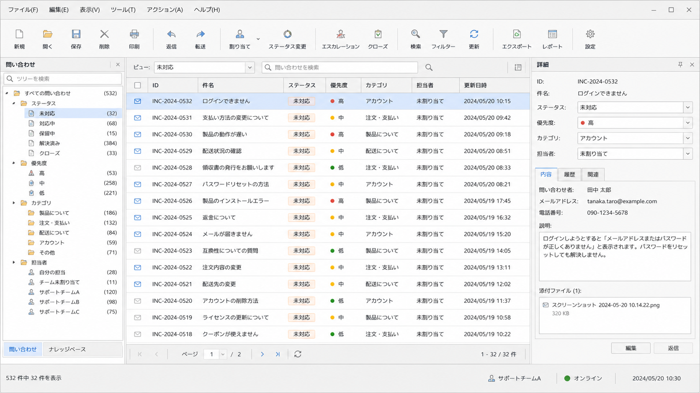
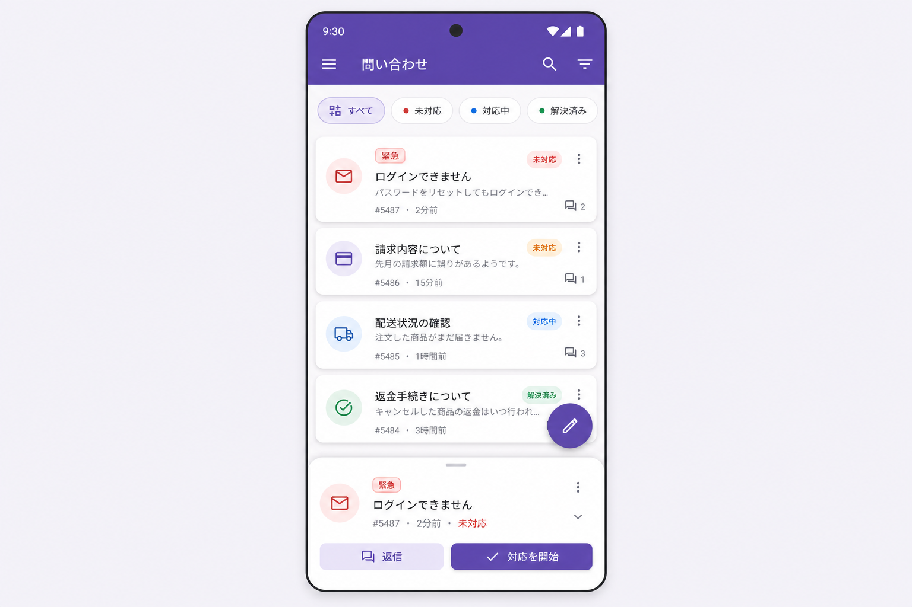
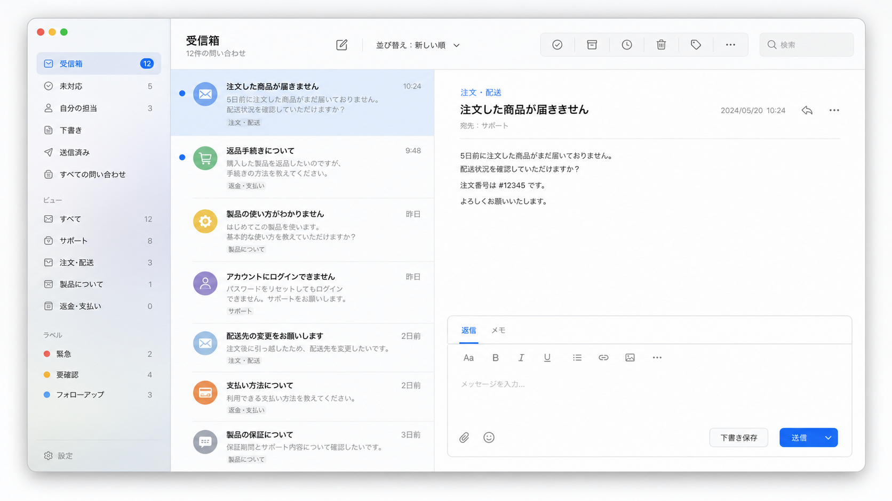
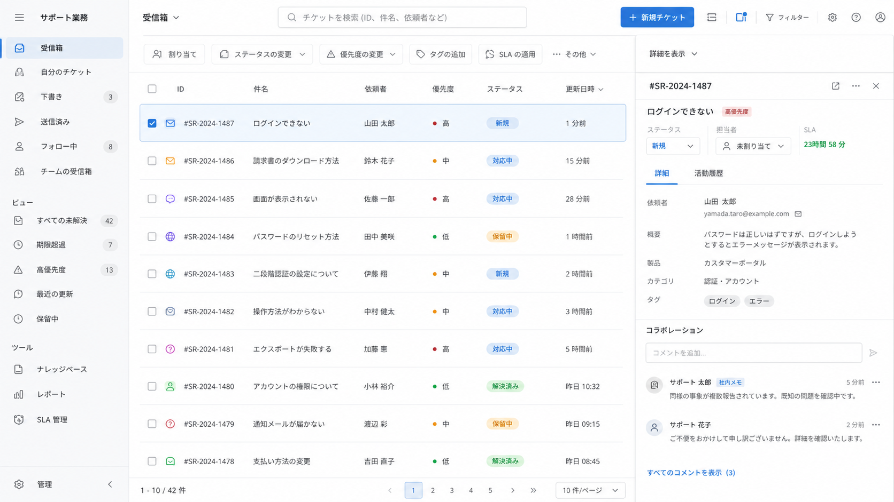

Frontend · 2026-06-19
AI生成UIに効くUIガイドライン
AI生成UIの品質を上げるために、Qt、Material Design、Apple Human Interface Guidelines、Fluent 2の考え方と、同じ題材をそれぞれのガイドラインに寄せたときの画面サンプルを整理する。
ガイドライン名を使う価値は、AIへまとまった制約を渡せることです。Qt風なら密度のある業務ツール、Materialなら状態と動きが分かるモバイル/Webアプリ、Apple HIGなら内容を主役にした自然な操作、Fluent 2ならMicrosoft 365風の共同作業画面へ寄せやすくなります。
1. ガイドラインは「見た目」ではなく制約セット
UIガイドラインは、単なる配色や雰囲気ではありません。どの部品を使うか、余白をどう取るか、状態をどう見せるか、操作をどの順番で進めるか、どの密度で情報を置くかをまとめた制約セットです。
AIにとっても、この制約セットは有効です。「きれいに」「モダンに」では出力が平均的なWeb UIへ流れやすい一方で、ガイドライン名を指定すると、部品、階層、密度、状態表現の方向が揃いやすくなります。
| ガイドライン | 中心にある考え方 | 向いている画面 |
|---|---|---|
| Qt Quick Controls Guidelines / Qt風 | 標準コントロールを適材適所で使う実用アプリ設計 | 管理画面、デスクトップ風ツール、業務アプリ |
| Material Design | コンポーネント、状態、動き、階層を体系化する設計 | モバイルWeb、Android風アプリ、状態変化が多いUI |
| Apple Human Interface Guidelines | 内容を主役にし、プラットフォームの慣習に沿う設計 | iOS/macOS風アプリ、個人向けツール、軽い編集画面 |
| Fluent 2 Design System | 業務アプリの生産性、アクセシビリティ、一貫性を支える設計 | Microsoft 365風ツール、チーム業務、情報量の多い画面 |
2. 同じ題材で見るサンプル
ここでは「顧客問い合わせを確認し、担当者を割り当て、返信状況を管理する画面」を同じ題材として、各ガイドラインに寄せた場合の違いを見ます。
Qt風のサンプル: 密度のあるデスクトップ業務ツール
Qt Quick Controlsは、ボタン、入力、メニュー、ナビゲーション、ポップアップなどのコントロールを組み合わせて、Qt Quick上で完全なインターフェイスを作るための実用的なガイドラインを提供しています。ポイントは、凝った装飾よりも、標準部品を使って操作対象をはっきりさせることです。

AI生成UIでは、この指定にすると巨大なカードやLP風の余白が減り、表、ツールバー、分割ペインを中心にした「作業する画面」になりやすくなります。
Material Designのサンプル: 状態とアクションが見えるモバイル/Webアプリ
Material Designは、コンポーネント、色、タイポグラフィ、モーション、状態などを体系化したデザインシステムです。操作可能な要素、選択状態、エラー、読み込み、画面遷移を明確に見せるのが得意です。

Material風にすると、タップ領域、状態変化、画面遷移が整理されます。一方でAIはカードを増やしがちなので、業務画面ではカードの使いどころを限定した方がよいです。
Apple HIGのサンプル: 内容を主役にした軽い操作画面
Apple Human Interface Guidelinesは、iOS、iPadOS、macOSなどのプラットフォームらしい操作、階層、余白、入力、アクセシビリティを扱います。画面そのものを飾るより、ユーザーの内容と自然な操作を主役にする方向です。

Apple HIG風にすると、情報密度よりも読みやすさと自然な操作が前に出ます。業務用の大量処理画面より、個人の作業、確認、編集、返信に向いた見え方になります。
Fluent 2のサンプル: Microsoft 365風の共同作業画面
Fluent 2は、Microsoft 365やTeamsのような業務アプリで、一貫したコンポーネント、アクセシビリティ、共同作業の流れを作るためのデザインシステムです。大量の情報を扱いながら、コマンド、ナビゲーション、詳細ペインを整理するのに向いています。

Fluent 2風にすると、表、コマンドバー、詳細ペイン、共同作業のUIが自然に出ます。Microsoft系の業務環境に馴染ませたいときに使いやすい方向です。
3. ガイドラインごとの違い
| 観点 | Qt風 | Material | Apple HIG | Fluent 2 |
|---|---|---|---|---|
| 情報密度 | 高め | 中程度 | 低〜中程度 | 中〜高め |
| 主な部品 | 表、ツールバー、ツリー、タブ | App bar、カード、チップ、FAB | リスト、サイドバー、ツールバー、シート | Command bar、Data grid、Navigation、Details pane |
| 強み | 作業効率と安定感 | 状態表現とモバイル適性 | 内容重視と自然な操作 | 業務アプリと共同作業 |
| AIでの注意 | 古いWindows風に寄りすぎることがある | カード過多になりやすい | 余白が広すぎることがある | Microsoft風の見た目だけを真似しがち |
4. AIに渡すなら短くてよい
使い方は長いプロンプト集にしなくても十分です。重要なのは、ガイドライン名だけで終わらせず、何をそのガイドラインから借りるのかを一言添えることです。
顧客問い合わせ管理画面を作ってください。
Fluent 2を参考にし、Command bar、Data grid、詳細ペイン、キーボード操作、focus順を重視してください。
派手なLP風ではなく、Microsoft 365系の業務アプリに近い密度にしてください。5. AI生成UIレビューのチェックリスト
- 画面の主目的が1つに見えるか。
- PrimaryアクションとSecondaryアクションが区別できるか。
- カードや影が情報構造ではなく装飾として増えていないか。
- 表、リスト、フォームのラベルと値が揃っているか。
- hover、focus、disabled、loading、error状態があるか。
- 色だけで状態を表していないか。
- 情報密度が用途に合っているか。
- 長時間使う業務ツールとして疲れないか。
- キーボード操作とfocus順が破綻していないか。
- OSネイティブ風にするなら、独自部品を増やしすぎていないか。
6. まとめ
ガイドラインを使う目的は、特定ブランドの見た目をコピーすることではありません。Qtなら密度と標準部品、Materialなら状態とアクション、Apple HIGなら内容中心の自然な操作、Fluent 2なら業務アプリと共同作業というように、画面の判断基準をAIへ渡すことです。
AI生成UIを整えるときは、作りたい画面の用途に近いガイドラインを選び、そのガイドラインらしい部品、密度、状態表現、ナビゲーションを指定します。画像で完成形の方向を見せると、文字だけで指示するよりも意図が伝わりやすくなります。
参照元
- AI生成UIの「安っぽさ」を一発で解決する意外な指示語 — Qt風デザインが効く理由 — TechFeed、確認日: 2026-06-20
- Slightly reducing the sloppiness of AI generated frontend — envs.net、確認日: 2026-06-20
- Qt Quick Controls Guidelines — Qt Documentation、確認日: 2026-06-20
- Human Interface Guidelines — Apple Developer、確認日: 2026-06-20
- Material Design — Google、確認日: 2026-06-20
- Fluent 2 Design System — Microsoft、確認日: 2026-06-20